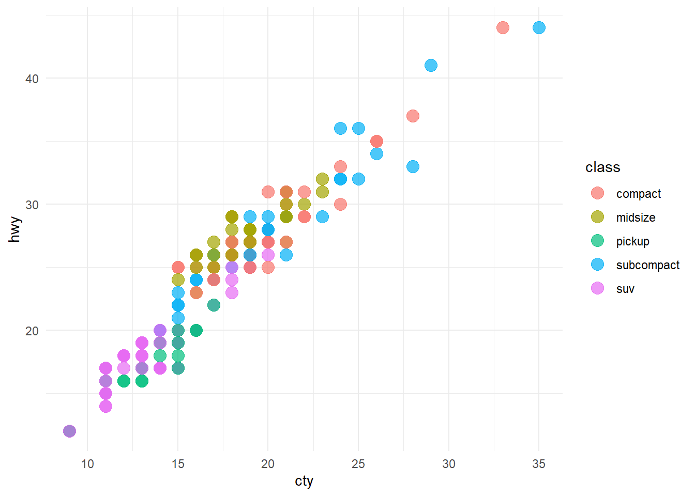
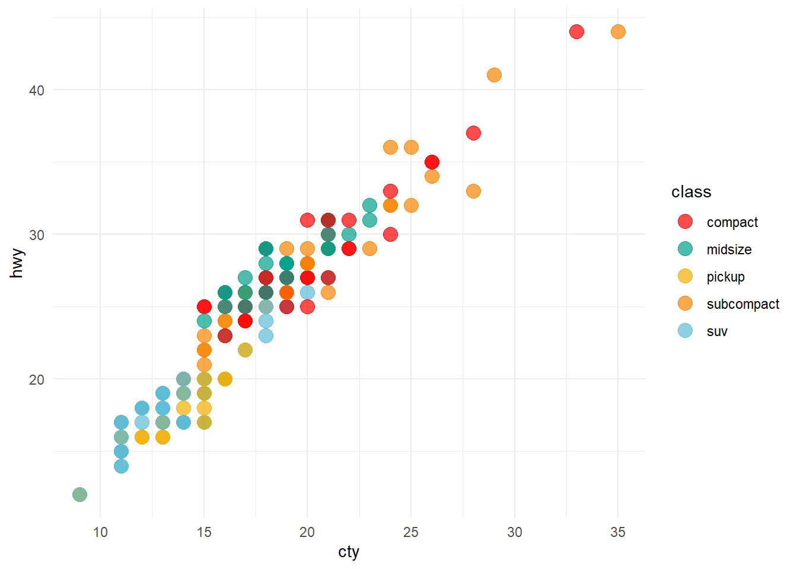
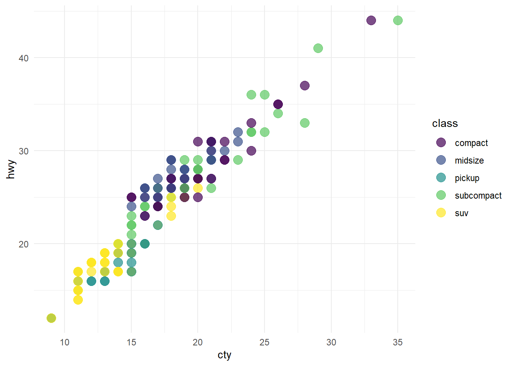

cleanrmd::use_cleanrmd(name = "holiday")p1 +
scale_color_viridis(discrete=TRUE)
2023-10-03
Note the output. Here, I used a new package called cleanrmd. This allows us to change the themes in the output HTML. Read more about it here: https://pkg.garrickadenbuie.com/cleanrmd/reference.html
Install it by running the following command in the console. install.packages(‘cleanrmd’)
cleanrmd includes the following no-class CSS themes:
almond awsm.css axist bamboo bullframe holiday kacit latex.css markdown-splendor markdown-retro markdown-air markdown-modest marx minicss new.css no-class picocss sakura sakura-vader semantic simplecss style-sans style-serif stylize superstylin tacit vanilla water water-dark writ
Pick one theme and execute the following function. I am using “bamboo”.
cleanrmd::use_cleanrmd(name = "holiday")Install package pacman by running the following command in the console. Don’t run it in any R chunk below!
pacman enables installing and loading multiple packages in one shot.
install.packages(“pacman”)
In this code, I will focus on a few common uses of scale_*_* functions.
For colors, it is better to use mpg data set because it has many categorical variables. Here I am filtering out observations with 2seater and minivan because the color palettes used in wesanderson package has usually 5 distinct colors. So it becomes easier for me to demonstrate the use of the scale function with 5 distinct categories of class.
p1 = mpg %>%
filter(!class %in% c("2seater", "minivan")) %>%
ggplot(aes(x = cty, y = hwy, color = class)) +
geom_point(size = 4, alpha = 0.7)
p1
We will use scale_color_manual() to change the colors manually.
wesanderson packageThis package is based on the colors used in Wes Anderson movies: https://github.com/karthik/wesanderson The package developer Karthik Ram is one of the most productive and talented R developers.
p1 +
scale_color_manual(values = wes_palette("Darjeeling1"))
Play with other color palettes.
viridis is a collection of colorblind-friendly color palettes
Its developer Bob Rudis is a cybersecurity expert, but he is also a fantastic R developer with several packages under his belt. Check out the viridis vignette: https://cran.r-project.org/web/packages/viridis/vignettes/intro-to-viridis.html
p1 +
scale_color_manual(values = viridis(5))
Bob has also added scale functions to directly use these colors.
p1 +
scale_color_viridis(discrete=TRUE)
Pick different palettes using option argument inside scale_color_viridis()
option - A character string indicating the colormap option to use. Four options are available: “magma” (or “A”), “inferno” (or “B”), “plasma” (or “C”), “viridis” (or “D”, the default option) and “cividis” (or “E”).
p1 +
scale_color_viridis(option = "A", discrete=TRUE)
Let’s take one last example with a continuous color scale.
p2 = mpg %>%
count(class) %>%
ggplot(aes(x = reorder(class, -n), y = n, fill = n)) +
geom_col() # equivalent to geom_bar(stat = "identity")
p2
p2 +
scale_fill_viridis(direction = -1)